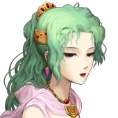

Score : 0
Responsable développements
Gemab | 2014 à 2020
- Création du site internet et de support de communication (press kit, flyers ...).
- Gestion de projets de recherche multi-partenaires.
Business developer
Mitologics | 2010 à 2012
- Développement d'outils automatisés (VBScript) d'aide à la R&D.
- Conception du site internet et mise à jour d'outils de communication.
Assistant informatique
Helios Biosciences | 2007 à 2009
- Elaboration d'une base de données informatique européenne en chronobiologie.
- Proposition d'outils informatisés d'aide au travail.
IFOCOP Paris 11
Développeur web Fullstack JS (RNCP niveau 6)
- 2021
- Création d'applications web et mobiles riches Front et Back-end JS.
Sup'Biotech
Master biotechnologie spécialisation marketing
- 2010
Féru d'informatique et de nouveautés, je me suis lancé dans le DIY.
J'aime jouer aux jeux vidéos et aux jeux de sociétés.
Je suis gardien de roller hockey (champion IdF 2009, vice-champion N3 2010, champion N4 2019 et 2020).
Je participe à la vie de mon quartier en tant que trésorier de mon comité.
Jeu en pause
